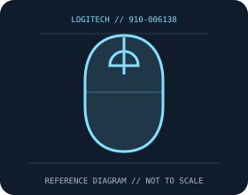

[ MICE AND TRACKBALLS // IDENTIFIED COMPONENT ]
Logitech G502 X Wired Gaming Mouse
Wired right-handed gaming mouse combining HERO 25K optical tracking with LIGHTFORCE hybrid optical-mechanical main-button switches.

MODEL IDENTIFICATION: 910-006138. Confirm printed identifiers, revision, region, and included accessories before repair or compatibility claims.
Model specifications
| Catalog leaf | Mice and trackballs |
|---|---|
| Exact model / identifier | 910-006138 |
| Sensor and switches | HERO 25K optical sensor, adjustable 100–25,600 DPI, over 400 IPS and over 40 g. LIGHTFORCE hybrid optical-mechanical main switches; Logitech lists 1,000 Hz report rate. |
| Wired/wireless interface; polling and DPI | Wired USB-A with a flexible USB cable; no wireless radio or receiver. Logitech G HUB enables configuration and profile management. |
| Dimensions and weight | 131.4 × 79.2 × 41.1 mm; 89 g (cable excluded). |
| Host and driver compatibility | Basic USB pointer operation is host HID dependent; G HUB customization is supported on specified Windows/macOS versions. Features and app support can vary by OS and software release. |
| Power and battery | USB bus powered; no battery. No charging or replaceable power cell. |
| Revision and SKU caveats | This is the wired G502 X SKU 910-006138, not G502 X LIGHTSPEED or G502 X PLUS. Those wireless variants differ in radio, battery, weight, and lighting; confirm full SKU suffix and region. |
Preservation and service
Keep the receiver, cable, battery cover, and included accessories with the identified mouse. Clean optical apertures and trackball contacts without introducing liquid; record host OS, driver/firmware version, connection mode, and battery condition during tests.
Published maximum DPI, polling, click-life, and runtime values are manufacturer figures under specific test conditions, not a guarantee of individual-unit performance.
Manufacturer sources
- Logitech G502 X wired product pageManufacturer product or support documentation; confirm the exact SKU, region, and revision against the device label.
- Logitech support search for G502 X documentationManufacturer product or support documentation; confirm the exact SKU, region, and revision against the device label.
Manufacturer documentation changes over time; retain the applicable manual and revision with the physical equipment record.